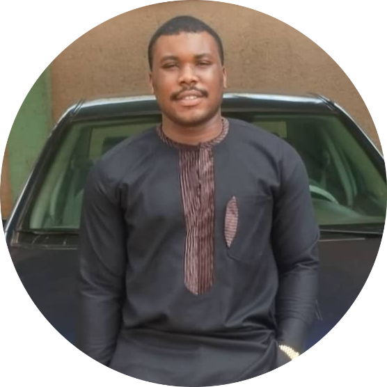

|  |
Jerry OkoliStudent at Alt School Africa Student ID: ALT/SOE/023/2978 I am a Software Engineering student of Alt School Africa Software Engineer aspirant |
Hello, I am Jeremiah Jahbuikem Okoli, a visionary problem solver and a student of Software Engineering at the National Institute of Information Technology in Port Harcourt, Nigeria. From my early years in the small town of Otukpo, Benue State, I've been passionate about technology and video games, honing my skills with the guidance of my father.
Born into a family of eight, I am the only son among six siblings. Growing up in a disciplined environment, my strict parents instilled in me the values of resilience and hard work. Early on, my dad played a crucial role in nurturing my problem-solving abilities. My love for video games and technology has been a constant companion since childhood, influencing my decision to embark on a journey into the world of software engineering.
Currently pursuing my degree in Software Engineering, I am gaining knowledge and skills at the National Institute of Information Technology. While I am yet to embark on internships, I am enthusiastic about exploring various aspects of software development.
At the age of 20, I am focused on my educational and professional journey. Driven by a strong desire to make a significant impact in the tech industry, I am actively pursuing my goals in software engineering.
Motivated by the exceptional results of Alt School Africa and its reputation for producing outstanding software engineers, I made the choice to join their program. With a goal of becoming a full-stack software engineer and starting my own startup, Alt School Africa has been instrumental in connecting me with like-minded individuals, providing valuable insights into the tech industry, and offering guidance for building a sustainable career in software engineering.
I find joy in pop music, hip-hop, and Afrobeat. While my travels are limited, exploring the world is on my bucket list. Music, particularly during coding sessions, has proven to be a source of inspiration and productivity.
My aspirations at Alt School Africa include becoming a successful frontend engineer, collaborating with interesting individuals, and playing a vital role in projects that aim to revolutionize healthcare in Nigeria. I am committed to leveraging the tech skills gained from Alt School Africa to contribute to the improvement of healthcare in remote areas of Nigeria. In reflecting on my journey, I am excited about the role Alt School Africa will play in propelling me toward achieving my goals and making a lasting impact on the world.
More about me My Hobbies Contact Me